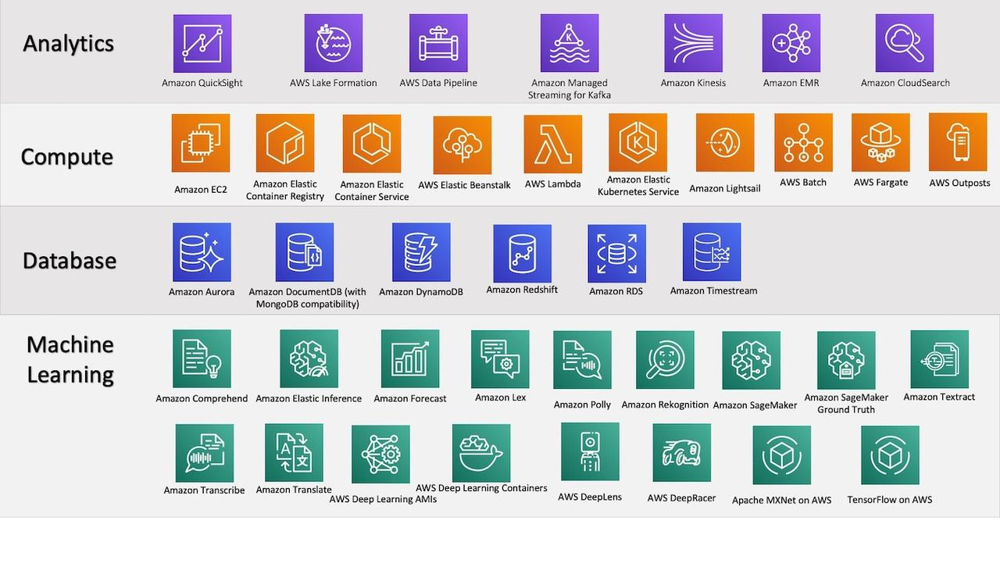

A Gentle Introduction to the AWS Platform
AWS platform from 30k view¶
The AWS platform is an offering from Amazon and by far is considered the industry leader in this segment. It is available in 190 countries around the world and is used by hundreds of thousands of business and governmental bodies around the world.
Regions and availability zones¶
An AWS region is a physical location in the world, where there can be multiple availability zones. Availability zones consist of one or more discrete data centers, each with redundant power, networking, comms, housed in separate facilities. There are over 60 availability zones within over 20 regions around the world.
Components of the platform¶
The sheer number of services available from the AWS platform can be quite dizzying. I made the schematic below to refer to the most commonly used services by data scientists:

For convenience, the services are grouped under a set of broad categories such as analytics, application integration, database, compute, IoT... etc.
Analytics¶
Below are some popular services under the analytics bucket
- Athena - interactive query service that makes it easy to analyze data in S3 using SQL
- EMR - managed Hadoop framework that makes it easy to process vast amounts of data across dynamically scalable EC2 instances.
- CloudSearch - a search solution for your website or app
- Elasticsearch - search service
- Kinesis - analyze real-time and streaming data
- Redshift - fast, scalable data warehouse with 10x performance using ML, massively parallel query execution, columnar storage on high performance disk.
- QuickSight - cloud-powered BI service
- Data Pipeline - process and move data b/w different AWS compute and storage services
- Glue - fully managed ETL service
- Lake Formation - service to set up a secure data lake in days.
Compute¶
- EC2 - Elastic Compute Cloud - the service that changed it all. Allows you to pay for only what you consume. 3 types of instances: On-demand (pay as you go), Reserved (dedicated resources at 70% discount) and Spot (utilize unused capacity at 80% discount)
- Elastic cloud registry - Docker container registry
- Elastic container service - container orchestration service
- Elastic container service for Kubernetes
- Lightsail - VPC with AWS
- Batch - batch compute jobs on AWS
- Beanstalk - deploy scalable web apps developed with Python, .NET, PHP, Node.js etc
- Fargate - compute engine for AWS that allows you to run containers without having to manage servers or clusters.
- Lambda - run code without provisioning servers. No charge when code is not running.
- Outposts - bring native AWS services, infrastructure, operating models to any data center / on-premises facility.
Database¶
- Aurora - MySQL, PostgreSQL compatible relational database engine.
- DynamoDB - key-value and document database that delivers single-digit millisecond performance at scale.
- Neptune - graph database.
Machine Learning¶
- SageMaker - fully managed platform for quickly building, training, deploying ML models at scale.
-
SageMaker Ground Truth - service offers access to public and private human labelers and provides them with built-in workflows and interfaces to build training data. Lowers cost by
70%. A model in parallel keeps learning from human labelers and can offer labeling service. - Comprehend - NLP service to find insights in text.
- Lex - build conversational interfaces into any app. It is the same service that powers Alexa.
-
Polly - text to lifelike speech. Supports
47voices in24languages. - Rekognition - image analysis service that can detect objects, scenes, faces, compare faces, visual search etc.
- Translate - translation service
- Transcribe - automatic speech recognition (ASR). Allows you to transcribe files in S3 and add a textual search of audio / conversation files.
- Elastic inference - attach low-cost GPU powered inference to EC2 and SageMaker instances.